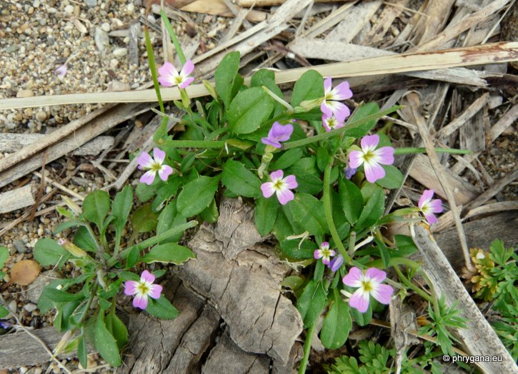
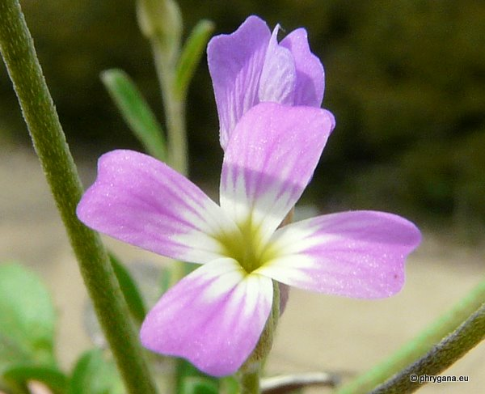
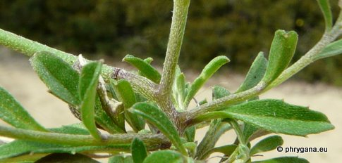
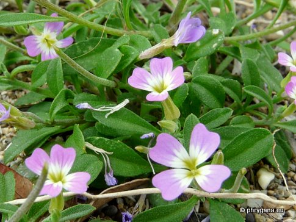
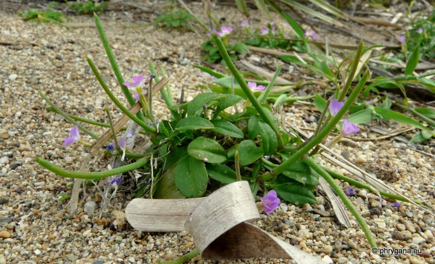

| PHRYGANA | Fauna | Flora | nouveautés | liste des espèces |
contact -
info - commentaires phrygana1 (at) gmail.com |
| Particularités crétoises | Galles et mines | ressources naturelles |
| Malcolmia chia (L.) DC. |
| 297 | Flora | BRASSICACEAE BURNETT | Malcolmia R. BR. |
|
 Malcolmia chia Vaï 30 mars 2011 |
| en: Chian Stock | |
| Plante basse, poilue; poils étoiles (3 - 4 branches) | |
| Feuilles: minces, oblongues, dentées ou non | |
| Tige droite, courte, ramifiée dans la partie supérieure | |
| Fleurs: petites (4.5 - 12 mm), de couleur rose pâle à violet clair, parfois blanche; et centre jaunâtre; onglet du pétale plus long que le limbe; calice long de 3 - 6 mm | |
| Fruit: une silique longue de 25 à 70 mm, ascendante à dressée verticalement, prolongée par le style (1.5 mm); pédicelle fructifère plus mince que la base de la silique | |
| Hauteur: 6 - 25 cm | Type biologique: thérophyte ramifié |
| Floraison: février mars avril mai juin | |
| Altitudes: 0 - 1600 m | |
| Statut en Crète: indigène | |
| Biotopes en Crète: plages, rochers côtiers, dunes, champs abandonnés, bords de chemin, phrygana | |
| Distribution: région Méditerranéenne, Asie du sud-ouest, Macaronésie | |
|
 Malcolmia chia Vaï 30 mars 2011 |
|

 Malcolmia chia Vaï 30 mars 2011 |
|
 Malcolmia chia Vaï 30 mars 2011 |
| 08 février 2012 |
| © paul fontaine -- © Phrygana.eu 2007 -- 2013 |